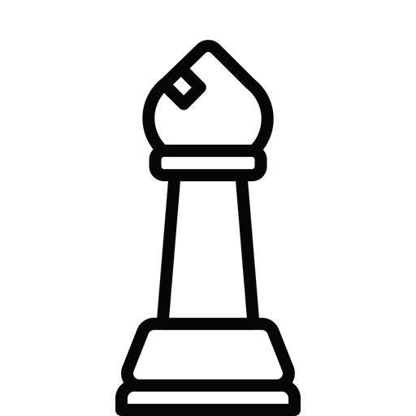

O bispo se move diagonalmente por qualquer número de quadrados, para frente ou para trás. A imagem abaixo mostra todos os quadrados possíveis para os quais o bispo pode se mover. Cada lado tem dois bispos; um bispo move-se ao longo dos quadrados de cor clara e o outro bispo move-se ao longo dos quadrados de cor escura.

O caminho do Bispo pode ser bloqueado por outras peças do tabuleiro. Na imagem abaixo, o Bispo agora tem menos escolha de casas para as quais ele pode se mover porque as outras peças brancas bloqueiam seu caminho.

Na imagem abaixo, o Bispo Branco é capaz de capturar a Torre. Isso é feito removendo a Torre do tabuleiro e colocando seu Bispo em seu lugar.